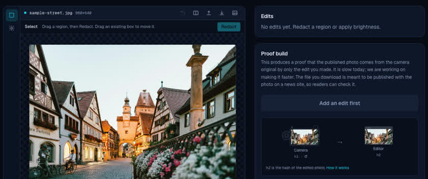
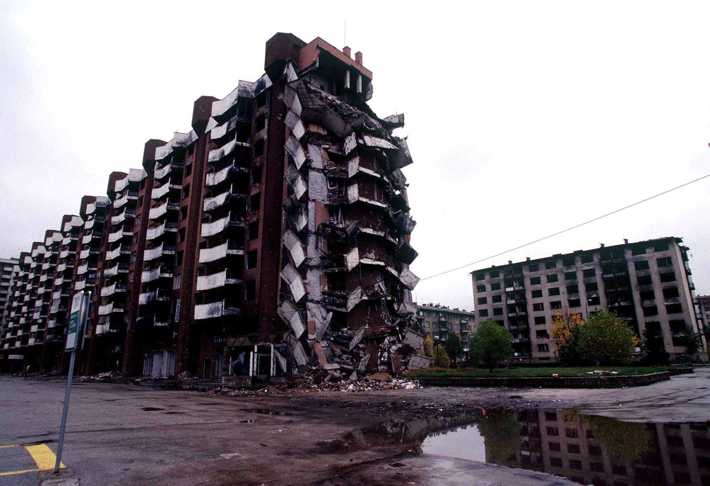
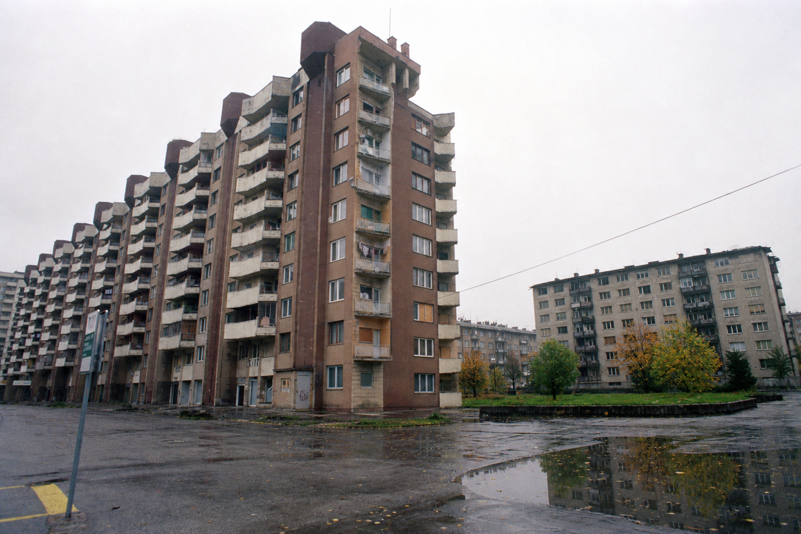
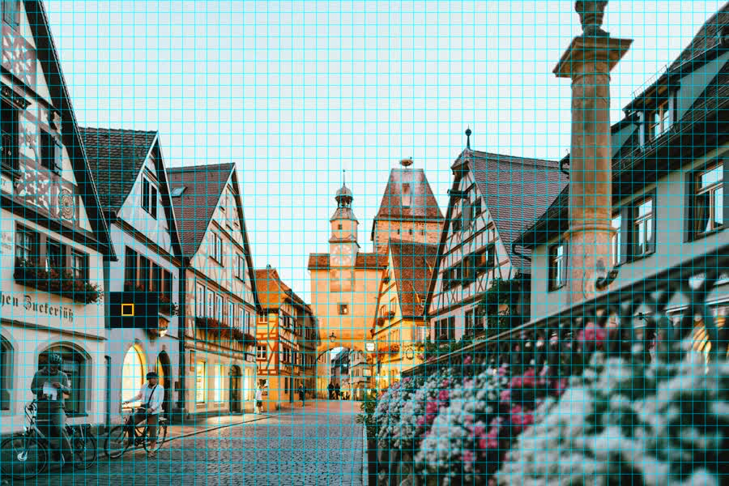
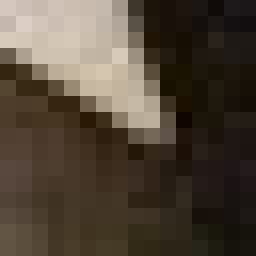
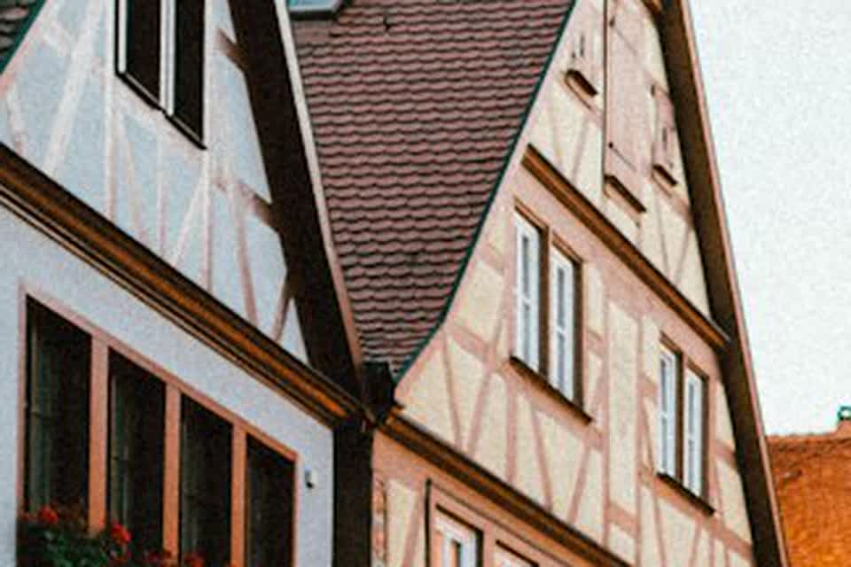

02Why EvaWhat made Eva the right thing to build on.
03How Eva worksMacroblocks, prediction, and what goes inside the proof.
04ImprovementsProve only the blocks the edit touched, and why that is hard.
05Is that enough?Whether efficient proofs are the whole story.

fightfake.aiedit a photo, then build the proof
Miha Stopar · fightfake.ai
Citizen journalism
Nidžara Ahmetašević started reporting during the siege of Sarajevo,
at seventeen. She was hungry and in constant danger, while
journalists from big media stayed in safe hotels with plenty of
whisky and meat.
We should be listening to local journalists and local people.
Nidžara Ahmetašević
I agree, and citizen journalism will only matter more. But how do we
trust it, if anyone can generate whatever photo or video they want?

Sarajevo, 1996SSGT Louis Briscese, USAF / public domain

AI-modified
Before the 2026 elections
Slovenia: videos offered as proof of corruption
National Assembly, LjubljanaWikimedia Commons
Days before the 2026 election, secretly recorded clips of politicians appeared on anti-corruption2026.com.
Every origin trace had been erased: when and where they were made, which device recorded them, who edited them.
Germany’s Federal Criminal Police (BKA) examined 27 files. None were original camera recordings, and none were AI-generated either: they had been processed, with origin traces wiped.
With capture provenance and a proof of every edit, none of this would have been in doubt.
What does the camera sign, and what do you have to keep around to publish?
Eva
zk-Cinema
Camera signs
Hash of the pixels
Commitment to the video
You keep
The published video
The published video and the lossless video, ~2 GB per 2 min
Prove (2 min 720p)
~2.4 h · GPU · includes H.264
~1.25 to 3.2 h · CPU · lossless only
Prove / pixel
~2.6 µs
~3.4 µs
Verify
~4 min
~8 to 26 s
Proof
~448 B
~0.7 to 1.8 MB
Viewer gets
Video + proof
Video + proof
Distribution
What has to travel with a video
Why Eva pays for it
The codec is inside the proof. That is the expensive part, and also
the reason nothing extra has to be stored or trusted.
Why zk-Cinema skips it
Proving compression is slow, so it proves the edit on lossless
video instead and moves the compression gap to a human.
How Eva works
Macroblock after macroblock, each hash chained to the last.
The frame is a grid of 16×16 macroblocks.
Eva walks them in order: hash this block together with the running state from the previous ones.
Hash chain: h = H(H(… H(MB₀), MB₁), … MBₙ)
At the end of the original video that chain is h1; after the edit, the same walk yields h2.
Originalone macroblock zoomed

Edited · redactsame block, now black
One macroblock
Pixels here are YUV, not RGB.
Y is luma (brightness).
U and
V are chroma (colour),
stored at half resolution in each direction (4:2:0). A 16×16 macroblock
holds 256 Y bytes plus 64 U and 64 V. That is what Eva hashes and edits.
Where we are in the frame

BeforeAfter redactY → 0
Y 16×16 · first 4 rows (real bytes from that macroblock)
202 194 189 197 193 190 187 153 56 21 18 23 23 12 26 24
186 209 200 193 199 194 183 168 83 24 18 20 16 24 17 15
204 201 194 200 202 192 184 173 110 22 19 15 20 36 26 26
96 162 195 196 196 183 182 204 146 43 28 16 25 26 27 25
U 8×8 · 121 120 119 120 … V 8×8 · 136 136 136 135 …
Redact (fill 0) → every Y in the macroblock becomes 0. The proof attests that only those bytes changed.
Prediction · intra
Each block is predicted from its neighbors.
Codecs do not store each block as raw pixels.
They predict X from neighbors already decoded (everything left and above), then store only the residual (what the prediction got wrong).
A good prediction means a small residual, and that is what shrinks the file.

Close-up of the macroblock gridcyan = already decoded · amber = block being predicted
What the file stores for X
X = predict(L, A) + residual
Only the residual is written down. The prediction is rebuilt from
neighbors the decoder already has.
So a block is not self-contained. Change L or
A and
X decodes to different pixels, even though nobody touched it.
Eva today
Eva proves encode. fightfake.ai ships edit-only for now.
The encode path uses prediction and residual witnesses inside the proof.
What ships on fightfake.ai proves the edit on pixels only: no predictions, no encode in the SNARK.
Re-encode happens afterward, outside the proof.
Making Eva faster
The edit touches a few seconds. Eva still folds every block.
Original · stays privatePublishedredact only ~2.0s to 4.5s
0:00 / 0:00
Here the edit is a moving black box on a short time range and a small spatial region.
Eva today folds every macroblock in the clip.
One improvement might be a touched-only approach: prove the blocks the edit can reach, and leave the rest as a signed copy from the camera.
Touched-only · commitment
Prove the island; open the rest.
Capture: hash each macroblock into the Merkle tree; the camera signs the root.
Island: the blocks that are edited.
The edit proof runs only over the island.
Outside the island: open each leaf against the root and check it stayed the same.
Touched-only · full re-encode
Re-encoding the edited video changes macroblocks outside the island.
A 720p frame is 3,600 macroblocks (80×45). This clip is 30 frames → 108,000 slots.
The island is only about 2% of those slots, so proving could look ~50× cheaper.
Outside the island, pixels stay the same, but a full re-encode still rewrites how most blocks are stored (prediction + residual), on the edited frames and almost every block after.
Touched-only · island-only encode
Merging the re-encoded island with the camera stream.
Island cutamber = island · cyan = left / above
At the cut
Island blocks get new predictions and coefficients from a re-encode.
Everything outside keeps the camera’s predictions and coefficients from the original encode.
The top-left island block is predicted from its left and above neighbors. Those must still match the camera stream, or prediction + residual no longer rebuilds the right pixels.
Where the hard part sits
Proofs might not be the most problematic part.
ZK proving elsewhere already fell by orders of magnitude.
A faster proof only attests what was signed at capture. That capture trust is still the weak link on cameras.
What a proof can do
Show that the published video follows from the signed one, and that
nothing beyond the declared edit happened to it.
What it cannot do
Say anything about whether the signed pixels ever came off a sensor.
That is decided inside the camera, before any proof exists.
Capture · attack
A few weeks ago on Hacker News: C2PA cameras do not survive contact with reality.
David Buchanan rooted phones that ship C2PA “signed at capture” and had the camera key sign pictures the camera never took.
Root is not exotic: a one click exploit works on fully patched Pixels, and fault injection works at any patch level.
Nothing broke cryptographically. Only the input to signing was attacker-chosen.
So a verifier sees a genuine signature from a genuine phone, over fabricated pixels.